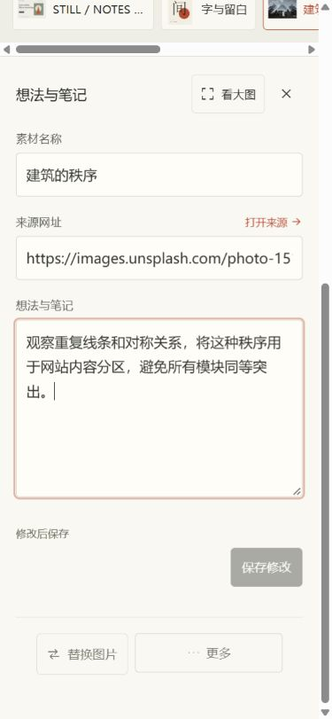
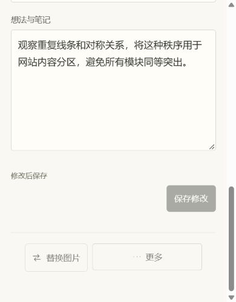
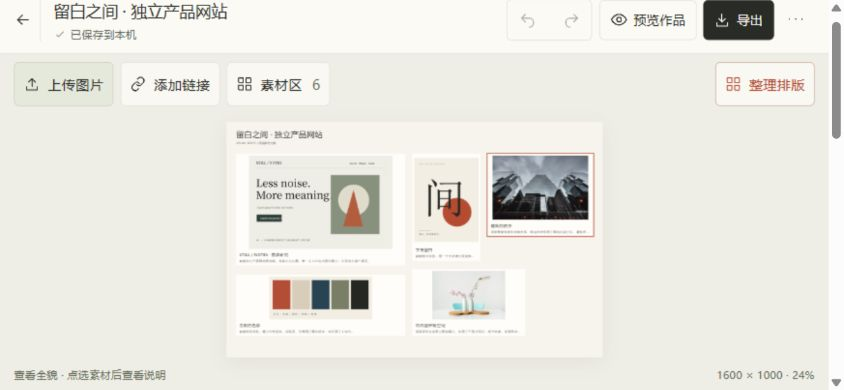
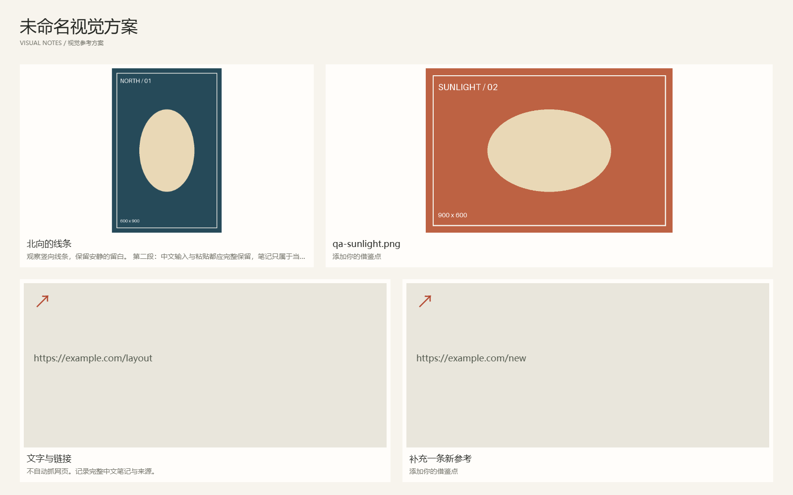

拾页第二轮 · 简化操作与轻松排版
以下为实际运行页面。左侧第一轮起点5ee33ef，右侧第二轮实现9503a90，同一产品示例、同选中“建筑的秩序”。点击图片打开原尺寸。四组文件尺寸相同，375的CSS视口为375×812、截图为375×811，包含1px取整。没有重绘界面或编造效率百分比。
完整交接 ·
验证与限制 ·
文件复核
桌面1440 × 900：更宽的画板，就地笔记
桌面1280 × 720：高度限制仍保留
画板由约49%变为约53%；全文在15px笔记区读写，不依赖缩小的画板摘要。
手机375 × 812：整体概览之后直接读改
手机390 × 844
一步看大图
手机笔记与短视口
375 · 阅读与保存区

390×500 · 取消后原文、操作可滚到

844 × 390 横屏

实际任务与作品图
| 任务 |
结果 |
| 加入参考 |
优先寻找空位，原布局不动；没有空位保留素材，明确决定是否整理后加入。
|
| 整理与恢复 |
明确点击才整理，最多12个元素；一次撤销完整恢复，重做稳定，刷新保留正确布局。
|
| 内容保护 |
切换处理未提交笔记，不写错对象；共享图片原位替换、移除一份保留素材。
|
| 导出 |
真实1600×1000
PNG；桌面与375手机模拟91550字节完全相同。TXT保留全文，JSON在另一来源恢复。
|
真实导出 · 横竖图、链接和中文笔记，无选中框与工具

整理不做坐标过渡，保留轻量弹窗反馈；本轮没有新增必要录像。手机、触屏、中文组合和短视口是浏览器模拟，未验证实体手机、真实软键盘或Safari。截图不能替代全部交互验收；具体操作与下载边界见验证记录。